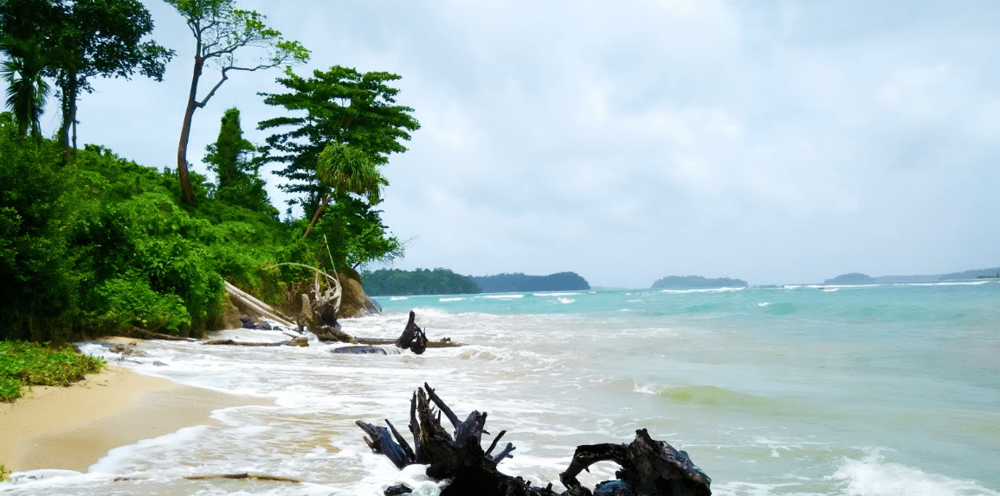

The Wandoor Beach is located 25 KMs from the Airport and is one of the major attractions in Port Blair. It comes under the Mahatma Gandhi Marine National Park area along with several other attractions. With sustainable tourism and protection of the forests under the Andaman Islands Administration, the beach is surrounded by a vast variety of fauna, which covers it from three sides. The beach itself is located at a remote place, which had to be reached by driving through lone roads that take you through the forests. The trip to the beach is amazing because you are occasionally greeted by sudden jump of wide blue sea, visible from between the forest canopy.
